Web Development
Mengembangkan aplikasi dan website dengan fokus pada struktur yang jelas dan pengalaman pengguna.
Halo, saya
Lulusan Pendidikan Teknik Informatika yang tertarik membangun solusi digital melalui pengembangan web, desain antarmuka, dan sistem informasi.
01 / TENTANG SAYA
Saya adalah lulusan S1 Pendidikan Teknik Informatika dari Universitas Negeri Padang dengan minat pada pengembangan web, sistem informasi, desain antarmuka, dan pemanfaatan AI.
Saya pernah terlibat dalam pengembangan website pemetaan posko bencana, pengelolaan informasi administrasi, praktik lapangan kependidikan, serta pekerjaan freelance di bidang desain poster dan live gaming. Saya senang mempelajari hal baru dan mengubah kebutuhan menjadi solusi digital yang mudah digunakan.
02 / KEAHLIAN
Kumpulan kompetensi yang saya kembangkan melalui pendidikan, proyek, dan pengalaman.
Mengembangkan aplikasi dan website dengan fokus pada struktur yang jelas dan pengalaman pengguna.
Menyusun antarmuka digital yang rapi, mudah dipahami, dan konsisten secara visual.
Mendukung pengelolaan informasi dan data agar tersaji secara terstruktur.
Memanfaatkan AI sebagai pendukung proses pengembangan website dan produktivitas digital.
Menggunakan perangkat produktivitas dan membantu kebutuhan administrasi digital.
Mengutamakan komunikasi, pemecahan masalah, kerja sama tim, dan kemauan untuk terus belajar.
03 / PENGALAMAN
Magang · Bidang Ekonomi dan Pembangunan
Membantu pengembangan website pemetaan posko bencana untuk menyajikan informasi lokasi secara digital, mendukung penataan antarmuka, serta membantu pengelolaan dokumen dan informasi administrasi.
Guru Magang · Mata Pelajaran Informatika
Mengajar dan membimbing siswa, menyiapkan materi serta perangkat pembelajaran, menyusun asesmen, melakukan evaluasi hasil belajar, dan membantu pengelolaan kegiatan kelas.
04 / PROYEK PILIHAN
Satu proyek utama yang menghubungkan teknologi web dengan kebutuhan informasi di lapangan.
Pengembangan aplikasi web pemetaan posko bencana dengan algoritma Haversine untuk membantu pencarian lokasi posko terdekat, didukung pendekatan Progressive Web Apps (PWA).
Pencarian lokasi terdekat menggunakan algoritma Haversine.
Pendekatan Progressive Web Apps untuk aplikasi berbasis web.
Pengumpulan data dan uji coba sistem bersama BPBD Kota Padang.
DOKUMENTASI APLIKASI
Dokumentasi antarmuka publik, peta posko, serta panel admin dan petugas.
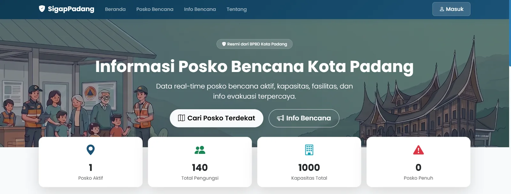
01 · Beranda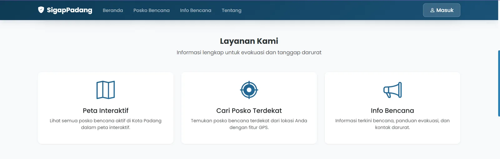
02 · Layanan Sistem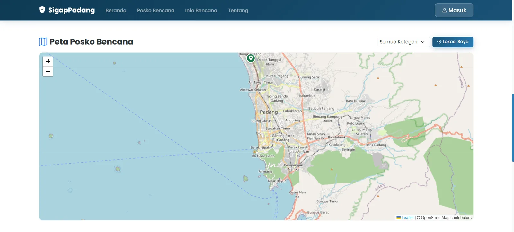
03 · Peta Interaktif Posko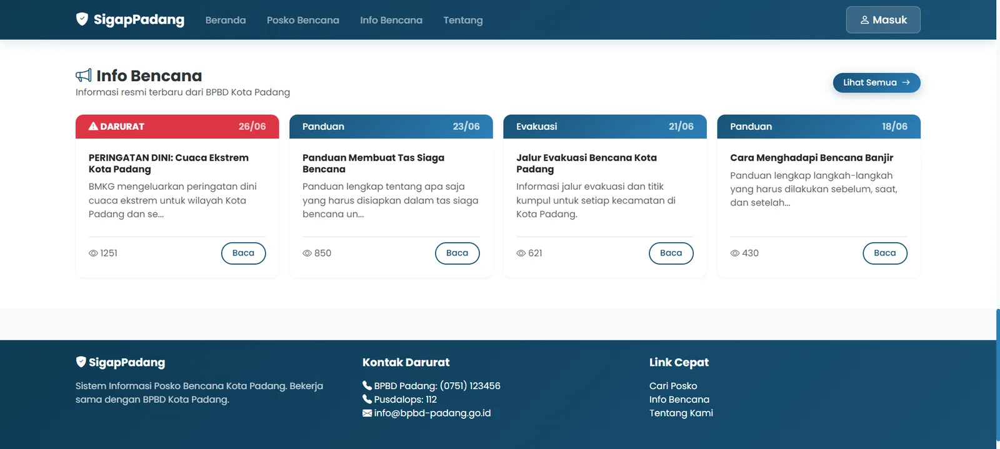
04 · Ringkasan Info Bencana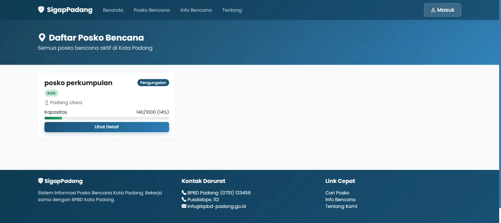
05 · Daftar Posko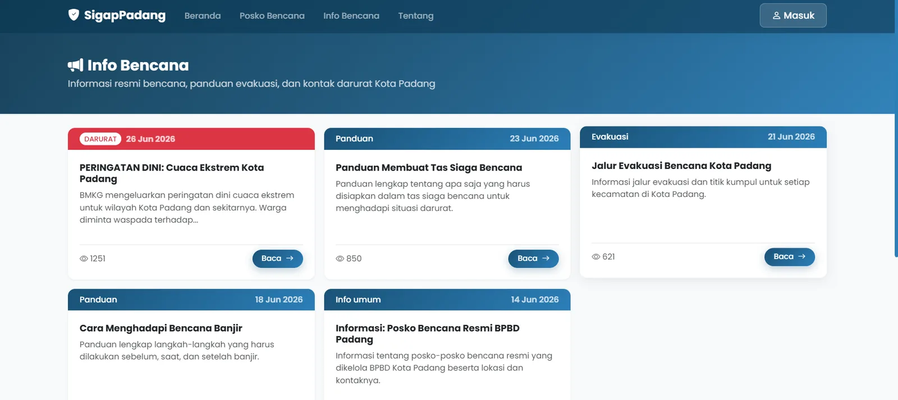
06 · Informasi Bencana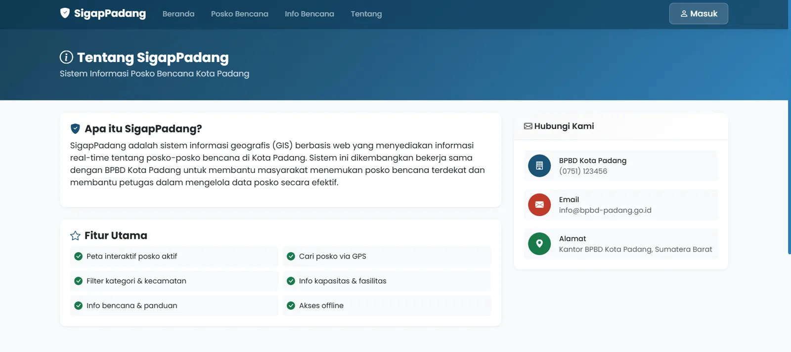
07 · Tentang Sistem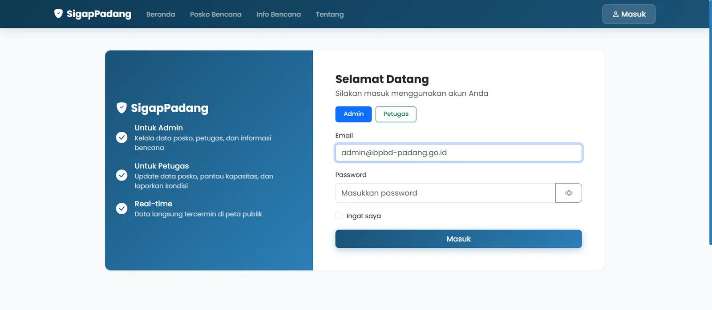
08 · Login Admin & Petugas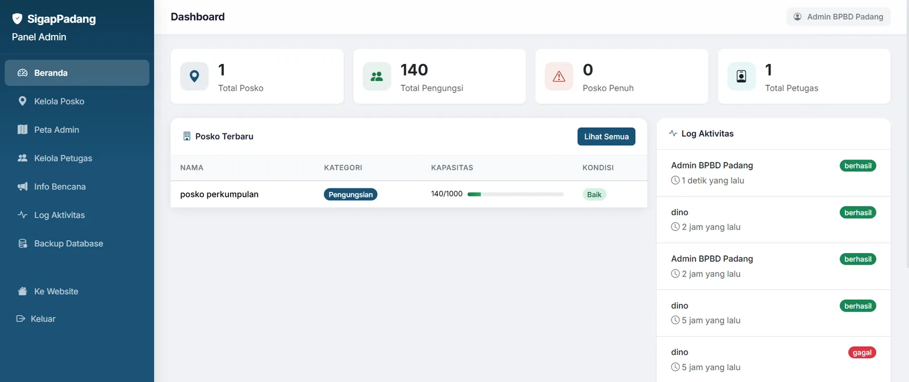
09 · Dashboard Admin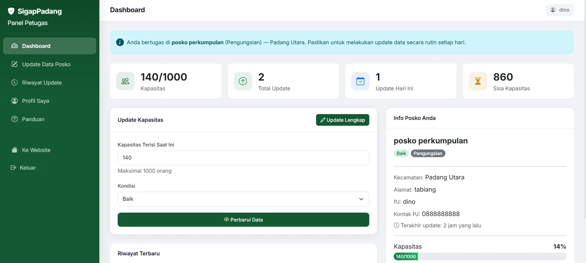
10 · Dashboard PetugasDokumentasi di atas merupakan tangkapan layar aplikasi SigapPadang yang dikembangkan sebagai proyek pemetaan dan informasi posko bencana Kota Padang.
05 / PENDIDIKAN & PELATIHAN
SARJANA (S1)
Pendidikan Teknik Informatika
UPT Bahasa · Universitas Negeri Padang
SERTIFIKASIAnthropic
PELATIHANGerakan Nasional Indonesia Kompeten (GNIK) · Kementerian Ketenagakerjaan RI · Maganghub
PEMBEKALAN · NILAI 9506 / SERTIFIKAT
Dokumen sertifikat dan hasil tes yang dapat dibuka langsung dari portofolio ini.
Pelatihan AI Fluency dari Anthropic.
Lihat sertifikat ↗GNIK berkolaborasi dengan Kementerian Ketenagakerjaan RI. Program Magang Nasional melalui Maganghub.
Lihat sertifikat ↗UPT Bahasa Universitas Negeri Padang · Skor total 70.
Lihat hasil tes ↗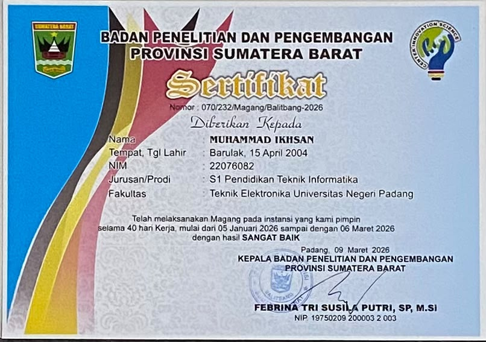
Magang selama 40 hari kerja di Badan Penelitian dan Pengembangan Provinsi Sumatera Barat, dengan hasil sangat baik.
Lihat sertifikat ↗07 / PUBLIKASI ILMIAH
Journal of Innovative and Creativity (Joecy) · Vol. 6 No. 2 (2026)
Baca Publikasi ↗10.31004/joecy.v6i2.13886
08 / KONTAK
Terbuka untuk peluang awal karier, kolaborasi, dan diskusi seputar teknologi.
Hubungi Saya ↗